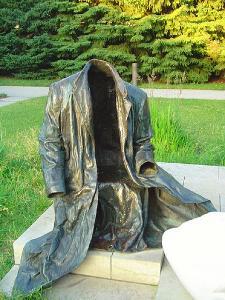

只是一些正确的废话和个人的偏见
关于
思无邪的博客
分类
全部
(44)
日常
(10)
梦话
(22)
经济学
(6)
西方现代思想
(3)
记梦
(2)
我似乎只在我需要的时候思考哲学
我总觉得自己平时想得挺多的，但每当真要写点什么的时候，却发现没什么东西可写。
2025年8月23日
思无邪
被驯服的爱情？
梦话
观刘擎教授驯服爱欲视频有感
2025年8月21日
思无邪
终于迁移完成了
日常
终于迁移完了，这次迁移有几个目的，主要是解决博客渲染慢的问题。同时增加了一些新功能
2025年8月21日
思无邪
我的第一篇 Quarto 文章
日常
這是一篇用來測試 Quarto 是否能正確渲染 LaTeX 數學公式的文章。當您使用
quarto preview
預覽時，網頁會通過 MathJax 函式庫將這些 LaTeX 語法轉換為漂亮的數學符號。
2025年8月21日
思无邪
迁移
日常
明天大概会把博客从hexo架构换成Quarto架构，希望能顺利。主要的麻烦在于如何把这写旧的博客迁移过去。
2025年8月20日
思无邪
庆祝六级的通过，并试试博客是否正常
日常
上次的重启博客发现read more功能失效了，只好直接把文字显示出来，这次试试是够正常。 话说六级过了，很开心，似乎成了我最近比较开心的一件事。让人重拾信心。 希望博客也正常了。
2025年8月20日
思无邪
重启
梦话
好久没写博客了，原因只是没想出来写啥
2025年8月4日
思无邪
无题
梦话
在公共空间里，什么样的规则是合理的？什么样的规则是好的？
2025年5月25日
思无邪
2025-4-29
日常
最近有些忙碌，好久没写博客了，赶紧来写一写。今天做了英语presentation，被评价为perfect job，让我对自己的英语学习能力产生了很大的信心。嘶，似乎除了这个好像也没什么值得记录的事了，真奇怪，最近挺忙的，不知道在忙啥。
2025年4月29日
思无邪
经济学：人们卖弄的经济学原理通常只有50%是正确的
经济学
今天换了本经济学的书，感觉这一本更好一些。回到标题，经济学之外何尝不是这样呢？
2025年4月29日
思无邪
寻租
经济学
为什么每个国家的人都很忙，但有的国家富裕，有的国家贫穷。 ### 寻租概念的起源 经济学家戈登·图洛克在《关税、垄断和偷窃的福利成本》里提出了一个天真的问题：为什么贼对社会有害，或者说贼对社会有什么害处？
2025年4月19日
思无邪
科斯定律：社会成本问题
经济学
风俗习惯和道德规范为何重要？ ### 案例引入 #### 案例一：泳池阳光与酒店副楼（FontaineBleau Hotel v. Forty–Five Twenty–Five ,1959）…
2025年4月19日
思无邪
成本：放弃的最大价值
经济学
别只盯着钱
2025年4月17日
思无邪
歧视：稀缺的必然结果
经济学
歧视
\(or\)
选择？
2025年4月16日
思无邪
新篇章：经济学，芜湖
经济学
为什么商业是最大的慈善？
2025年4月15日
思无邪
伯林：是否存在最高的价值？
西方现代思想
我们在做出决断时到底牺牲了什么？
2025年4月11日
思无邪
2025-4-11
日常
嗓子哑了，不过打打字还是没啥问题的。今天天气不错，虽然是阴天，却一点也不闷，小风很凉爽，但看着似乎要下雨。刚才在来图书馆的路上，看见路两旁的樱花树的花瓣一直在被吹落，像动漫里一样，不过花瓣看起来可没动画里那么大，不仔细看我还以为是柳絮。也有一整朵樱花掉下来的，正好砸我脚边上，吓我一跳。但不知道为啥稍远一点就看不到整朵的樱花掉下来了，可能掉得太快还…
2025年4月11日
思无邪
萨特：虚无带来自由
西方现代思想
人的存在和物的存在究竟有什么区别？ # 虚无为何会带来自由 一个显然的答案是人有意识，而物没有意识。但是有意识的人和没有意识的物，究竟不同在哪里呢？
2025年4月9日
思无邪
尼采：只有当你全部否定我的时候才是真正理解了我
西方现代思想
如何面对人生的虚无
2025年4月8日
思无邪
2025-4-7
日常
今天非常疲惫，而且拉肚子了，明天再写好了。不管今天发现了一本非常好的书，打算可以好好的写一写，对我理解现在的自己有很大帮助。
2025年4月7日
思无邪
虚无感：我希望我的生活能自圆其说
梦话
虚无感，名词，词典里没有解释，美学上指审美主体因对世界或特定对象以及自身存在的证据缺失、无根基、无归宿而体验到极其失落的感受。
2025年4月6日
思无邪
善恶：其实与人性无关
梦话
善恶，形容词，是善良与邪恶的组合词，常被用来形容道德，但一个社会的善恶水平却往往与人性无关。
2025年4月2日
思无邪
2025-4-1
日常
愚人节快乐，感冒未好，身体不适。
2025年4月1日
思无邪
BYD西安：这辈子不想再来的城市
日常
这篇blog是纯粹的发泄，内容含有粗鄙之语，容易引起不适，请谨慎观看。 妈的，西安这个城市，太让我失望了。
2025年3月31日
思无邪
亲密关系/孤独：是否只有两种选择
梦话
亲密关系，名词，顾名思义，非常亲密的关系，常指恋人、夫妻，但近年来越来越多的年轻人似乎不愿意进入亲密关系。
2025年3月30日
思无邪
健康：人们并不真的追求
梦话
健康，名词或形容词，指一个人在精神和身体各方面都处于良好的状态，但是人们也总是只在它出问题时才想起来。
2025年3月27日
思无邪
2025-3-26
日常
今天西安沙尘暴了，byd好的天气不学，把北京傻逼的沙尘暴给我复制过来了。一整天都非常呛。
2025年3月26日
思无邪
感动：别忘了保持警惕
梦话
感动，动词，指情绪受到外界刺激是产生的波动，本质是动摇。
2025年3月26日
思无邪
确定性：大部分时候只是一种幻想
梦话
确定性，名词，一种非常吸引人的、对未来的幻想。
2025年3月25日
思无邪
幸福：是否一定需要经历苦难
梦话
幸福，名词，许多哲学家都试图定义过的一种美好感觉。 今天是国际幸福日，所以借此机会，正好也不用想选题了，直接写点关于幸福的想法，不过我对幸福的思考非常少，可能没有什么好点子（其实之前的那些讨论也没什么好点子）。
2025年3月20日
思无邪
关于投射
梦话
投射，动词，指类似“望子成龙”等将自己的情感需要或者愿望强加于他人的现象，与共情相反。 前几天我讨论过“倾听”这个词，昨天晚上和同学在微信上聊天。我发现我根本做不到所谓”倾听“的境界。其实在聊天的过程中，我一直在聊自己，也就是今天想要说的”投射“。这种对话当然是很拧巴的，很快我也意识到了，不过当时大概心情不咋地或者之类的，也没有改正自己的行为。
2025年3月19日
思无邪
关于数码产品
梦话
数码产品，名词，一种人为创造的需求，正在演化成新时代宗教。
2025年3月17日
思无邪
无题
梦话
今日不知道谈什么，所以只好无题。
2025年3月16日
思无邪
关于倾听
梦话
倾听，名词，沉默的近义词，一种有效的人际交往方式，唯一的缺点是很难做到。
2025年3月15日
思无邪
2025.3.15
记梦
一个荒诞的梦
2025年3月15日
思无邪
乐观厌世
梦话
乐观厌世，名词，佛教用语。
2025年3月15日
思无邪
关于人生目标
梦话
人生目标，名词，可以理解为自己喜欢做的事情，但其实更像是脑门前悬着的那根萝卜。
2025年3月12日
思无邪
关于品味
梦话
品味，名词，众多烦恼中的一个
2025年3月10日
思无邪
生命与死亡的意义
梦话
思考自杀的意义其实就是在另一个方向思考人生的意义。 死亡并不带来除了尸体以外的其他任何的东西，所以如果想知道人生的意义，最简单的办法是先活着再说，不过活着并不代表有一天你会知道人生的意义是什么，毕竟常见的情况是，当你觉得你知道它是啥的时候，他又变了。从其他角度来说，死亡是迟早的，无法避免也无法选择的，所以某种意义上，死亡既单调又无聊，如果想干点…
2025年3月9日
思无邪
焦虑、自律和专注
梦话
今天讨论标题里的三个名词。 焦虑，名词，往往被理解为一种心理状态，但其实更像一个人，也就是另一个你自己。…
2025年3月9日
思无邪

只剩下套子的人
梦话
讨论社会问题时，总是可以听到两种论调，一种是“社会应该如何如何，明明可以如何如何”；而另一种想必也是显然的，就是“社会就是如何如何，要尊重现实如何如何”。倘若讨论的双方还有些体面，大抵也不会沦落到互相质问“你以为你是谁”的地步。…
2025年3月7日
思无邪
如果人生无意义，我该如何度过这一生
梦话
“当我沉默着的时候，我觉得充实；我将开口，同时感到空虚” ——鲁迅
2025年3月4日
思无邪
关于现代爱情的有趣比喻
梦话
近年来爱情似乎越来越稀缺，人们大多愿意以功利化的视角来看待爱情，常见的做法是把爱情拆成各个部分，然后每一个部分都可以找到一个很好的“平替”，似乎这样就可以彻底替代掉亲密关系，万事大吉了。但我那天看到了一个比喻，非常有趣，我觉得也非常有道理。他说爱情其实更像彩虹，你把彩虹每一个颜色都拆出来之后，每个颜色都找个更好的平替，也无法取代彩虹本身合在一起时…
2025年3月4日
思无邪
2025.3.1
记梦
梦见去了海底
2025年3月1日
思无邪
无匹配项